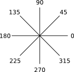
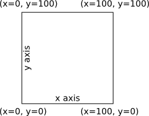

La brújula está orientada de manera que el este (derecha) es 0 grados, 90 es el norte, 180 es el oeste, 270 es el sur. Los ángulos se repiten como es de esperar: -90 es el sur, 450 es el norte.

cannon(angle, range)
La función cannon() dispara una bala de cañón hacia el
ángulo y el alcance especificados. El ángulo es independiente de la
dirección del pato. El alcance puede ser de 0 a 70 metros; los alcances
mayores se truncan a 70.
El cañón tarda aproximadamente un segundo en recargarse después de
disparar. Si se llama a cannon() durante ese tiempo, no pasa
nada.
cannon() devuelve true si se ha disparado una
bala de cañón, o false si el cañón se está recargando.
scan(angle) scan(angle, width)
La función scan() activa el radar del pato. Esta función
devuelve la distancia hasta el oponente más cercano en la dirección
especificada. El ángulo es independiente de la dirección del pato. Los
oponentes hundidos no se detectan. Si no hay ningún oponente en esa
dirección, se devuelve Infinity.
El segundo parámetro (opcional) de scan() especifica el
ancho del haz de escaneo. Puede ir de 1 grado a 20 grados. Los
jugadores avanzados pueden querer empezar escaneando con un ancho de 20
para hacer un escaneo rápido, y luego reducir progresivamente el ancho
para obtener más precisión. Si no se especifica, el ancho es 5.
Este parámetro solo está disponible con JavaScript, no con bloques.
swim(angle) swim(angle, speed)
La función swim() hace que el pato empiece a moverse. El
pato continuará moviéndose en la dirección especificada indefinidamente.
El segundo parámetro (opcional) de swim() especifica la
velocidad. Puede ir de 0 (parado) a 100 (rápido). La dirección del
movimiento solo se puede cambiar si la velocidad es 50 o menos. Si no
se especifica, la velocidad es 50.
Este parámetro solo está disponible con JavaScript, no con bloques.
Chocar contra los bordes del estanque dañará a tu pato. Chocar contra otros patos dañará a ambos patos. La cantidad de daño es proporcional a tu velocidad.
stop()
La función stop() hace que el pato deje de moverse. El
pato tardará un momento en reducir la velocidad antes de detenerse por
completo.
Esto es lo mismo que llamar a swim() con
una velocidad de cero.
getX() getY()
Las funciones getX() y getY() devuelven las
posiciones horizontal y vertical del pato. Los valores están entre 0 y
100, empezando por la esquina inferior izquierda.

speed()
La función speed() devuelve la velocidad actual del pato.
Los valores están entre 0 (parado) y 100 (rápido). Esta función puede
usarse para detectar colisiones (que detienen al pato instantáneamente).
health()
La función health() devuelve el nivel de salud actual del
pato. Los valores están entre 0 (hundido) y 100 (perfecto). Los
jugadores avanzados pueden querer almacenar la salud en una variable y
comprobar periódicamente si ha disminuido, lo que indicaría que el pato
está siendo atacado.
No hay ninguna forma de reparar la salud.
log()
La función log() imprime el número especificado en la
consola del navegador. Esto es muy útil para depurar el código.
if (condition) {
statements
}
if (condition) {
statements
} else if (condition) {
statements
}
if (condition) {
statements
} else {
statements
}
Si la condición es verdadera, se ejecutan las instrucciones
contenidas. El if puede ir seguido de cualquier número de
condiciones else if adicionales, y al final de una
condición else opcional que se ejecuta si ninguna de las
condiciones anteriores era verdadera.
== != < <= > >=
Estas expresiones comparan dos números y devuelven true
o false. Los seis operadores de igualdad disponibles son:
| Operador | Ejemplo | Devuelve |
|---|---|---|
| Igual a | 5 == 10 |
false |
| Distinto de | 5 != 10 |
true |
| Menor que | 5 < 10 |
true |
| Menor o igual que | 5 <= 10 |
true |
| Mayor que | 5 > 10 |
false |
| Mayor o igual que | 5 >= 10 |
false |
El uso de != puede ser peligroso si los números que se
comparan son fracciones. Consideremos este código diseñado para nadar
hasta 50 y luego detenerse:
while (getY() != 50) {
swim(90, 50);
}
stop();
Este código probablemente falle porque getY() puede
valer 49.4 en una ejecución y 50.6 en la siguiente. Como el valor nunca
se ve exactamente en 50, el bucle continúa para siempre. A continuación
hay un código mejor:
while (getY() < 50) {
swim(90, 50);
}
stop();
&& ||
«Y» se representa con el operador &&.
Devuelve true solo si ambas entradas son true.
Por ejemplo, este código solo disparará el cañón si el alcance es a la
vez mayor que 5 y menor que 70:
if (range > 5 && range < 70) {
cannon(angle, range);
}
«O» se representa con el operador ||.
Devuelve true si alguna de las entradas es true.
Por ejemplo, este código detendrá al pato si está cerca de cualquier
pared:
if (getX() < 10 || getX() > 90 ||
getY() < 10 || getY() > 90) {
stop();
}
true false
El valor true se utiliza principalmente con el bucle
while para crear un bucle que se ejecuta para siempre. El
valor false también está disponible.
while (condition) {
statements
}
Los bucles repiten la ejecución de las instrucciones contenidas mientras la condición sea verdadera. Así, el siguiente código disparará el cañón hacia el oeste para siempre:
while (true) {
cannon(180, 50);
}
Mientras que el siguiente disparará el cañón hacia el oeste mientras haya un oponente al alcance:
while (scan(180, 5) <= 70) { cannon(180, scan(180, 5)); }
123
Los números se utilizan para muchas cosas, como alcances, ángulos y
contadores. Los números pueden ser negativos (p. ej. -360), fraccionarios
(p. ej. 3.14159), o muy grandes (p. ej. 9007199254740992).
Incluso hay un número especial llamado Infinity.
No utilices separadores de miles (p. ej. 9.000).
+ - * /
Estos operadores toman dos números y devuelven uno solo. Los cuatro operadores aritméticos disponibles son:
| Operador | Ejemplo | Devuelve |
|---|---|---|
| Suma | 3 + 4 |
7 |
| Resta | 3 - 4 |
-1 |
| Multiplicación | 3 * 4 |
12 |
| División | 3 / 4 |
0.75 |
Math.operation(number)
Estas funciones toman un número y devuelven otro. Las ocho funciones disponibles son:
| Función | Ejemplo | Devuelve |
|---|---|---|
| Raíz cuadrada | Math.sqrt(25) |
5 |
| Valor absoluto | Math.abs(-25) |
25 |
| Seno | Math.sin_deg(30) |
0.5 |
| Coseno | Math.cos_deg(30) |
0.86 |
| Tangente | Math.tan_deg(30) |
0.577 |
| Arcoseno | Math.asin_deg(0.5) |
30 |
| Arcocoseno | Math.acos_deg(0.866) |
30.003 |
| Arcotangente | Math.atan_deg(0.577) |
29.985 |
Ten en cuenta que estas funciones trigonométricas son propias del juego del Estanque y todas utilizan grados. Las funciones estándar de JavaScript utilizan radianes.
Math.random()
Esta función devuelve una fracción aleatoria entre 0.0 y 1.0. Para obtener un número aleatorio en un rango mayor, basta con multiplicarlo por el valor máximo. Aquí tienes un ejemplo para obtener un ángulo aleatorio:
var angle = Math.random() * 360;
var name = value;
Asigna un valor (normalmente un número) a la variable con nombre.
El nombre de la variable debería tener sentido, como range
o angle.
Ten en cuenta que los nombres de variable distinguen entre
mayúsculas y minúsculas, por lo que angle y Angle
son dos variables completamente distintas. Los nombres de variable solo
pueden usar las letras inglesas a-z y números. Los nombres de variable no
pueden empezar por un número.
La palabra clave var puede omitirse en todas
las asignaciones excepto en la primera, pero no hay ningún problema en
usarla siempre.
name += number;
Esto es un atajo para sumar un número a una variable existente. No hay ninguna diferencia entre las dos líneas siguientes:
angle += 10; var angle = angle + 10;
No uses += en una variable que aún no se haya definido.
Si tienes dudas, asigna 0 a la variable al principio del programa.
name
Recupera el valor (normalmente un número) que se había asignado previamente a la variable con nombre.
TODO